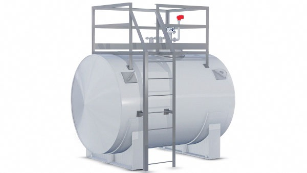

Резервуар РГСн-10
Раздел: Емкости и резервуары · АЗС
Цена и наличие — по запросу. Поставляем оригинал и аналоги. Доставка по России.
Описание
Резервуар РГСн-10 — позиция из раздела «Емкости и резервуары» для АЗС. Компания SYNDICAT поставляет оборудование и комплектующие для автозаправочных и газозаправочных станций по всей России. Цена и наличие «Резервуар РГСн-10» — по запросу: оставьте заявку или позвоните, подберём оригинал или аналог и рассчитаем доставку.